P01 首页
Figma 15:2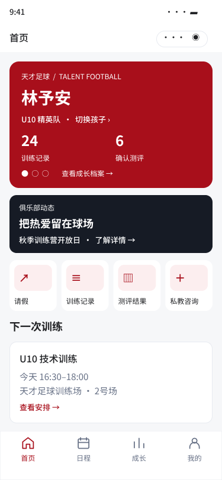
仍为“首页”标题、无头像的合并身份统计卡及文字 Banner；保留四功能入口和下一次训练。按17号拆身份/统计与成果区，替换为后台图片 Banner。
P02 日程
Figma 15:6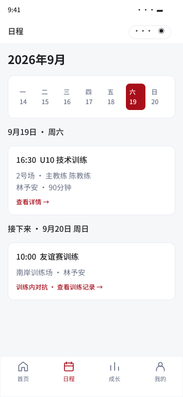
已有周历、日期分组和部分地点，第二组明确为9月20日；未见头像排列、月视图或三类事件色块。保留已有日期分组，增加已确认交互。
P03 训练详情
Figma 15:10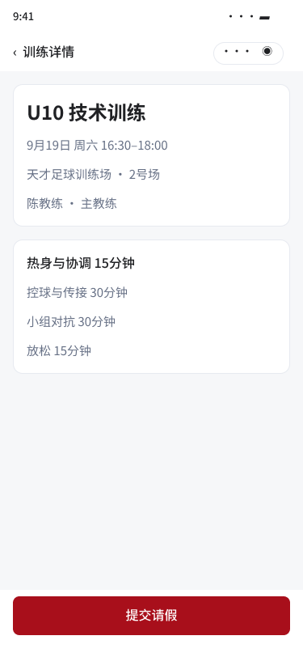
时间、场馆/2号场、主教练和训练内容齐全；无孩子身份、课程状态，主操作固定“提交请假”。补对象及状态驱动动作。
P04 提交请假
Figma 15:14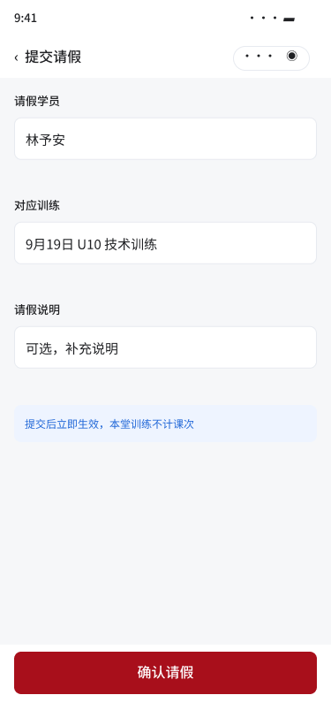
已有孩子、对应训练、可选说明和直接生效提示；没有首页选课状态。复用表单，补选课与锁定对象。
P05 请假已生效
Figma 15:18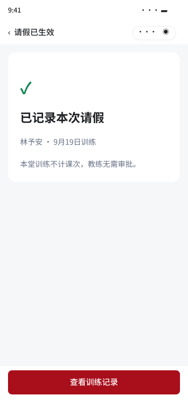
已有真实请假成功及不计课次提示，只有“查看训练记录”主动作。补返回这堂课及列表刷新约定。
P06 修正训练记录
Figma 15:22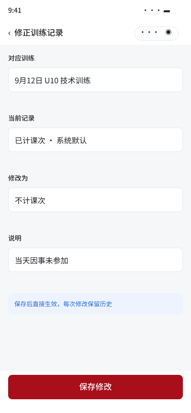
已有当前结果/来源、改为、说明及直接生效留痕提示；缺孩子身份和取消/冲突状态。保留业务语义，补上下文和失败恢复。
P07 记录与修改历史
Figma 15:26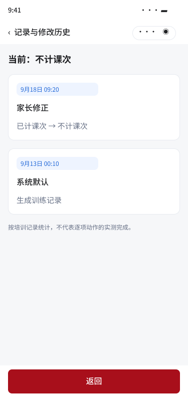
已有当前有效结果及两条修改历史；缺课程、孩子和显式修正入口。补对象摘要及修正动作。
P08 成长
Figma 15:30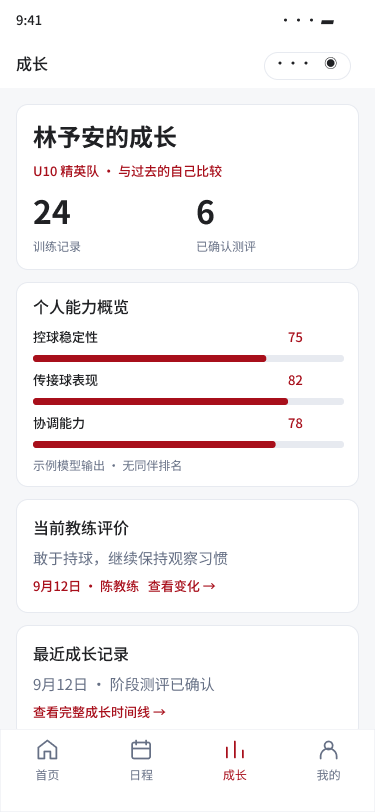
仍为统计、三个能力条形、当前评价和成长时间线；不是新讨论的雷达下钻/趋势结构。按17号改造，保持单孩。
P09 测评项目详情
Figma 15:34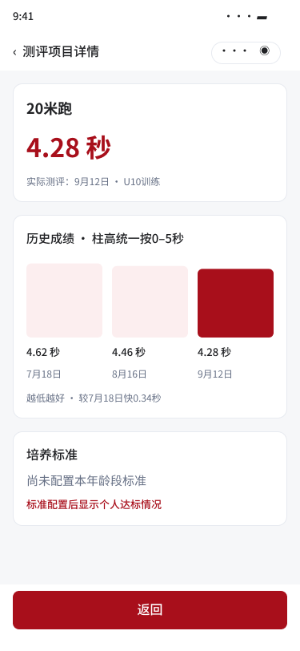
已有20米跑原始值4.28秒、按0–5秒统一标尺的历史柱图、实际测评日期/课程和缺标准说明；缺整数分值/等级及构成/关联训练。保留事实表达，不重做已有历史基础。
P10 测评历史
Figma 15:38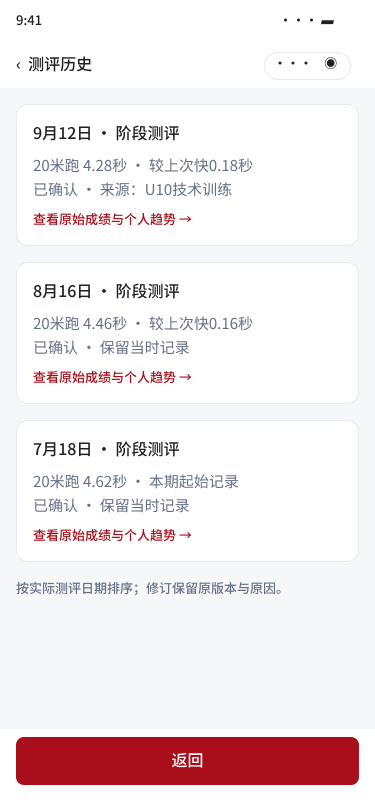
已经逐条展示日期、20米跑成绩、改善量、确认和来源信息；不能再声称只有“6项”。补孩子、筛选、逐项来源与指定历史结果导航。
P11 学期成长报告
Figma 15:42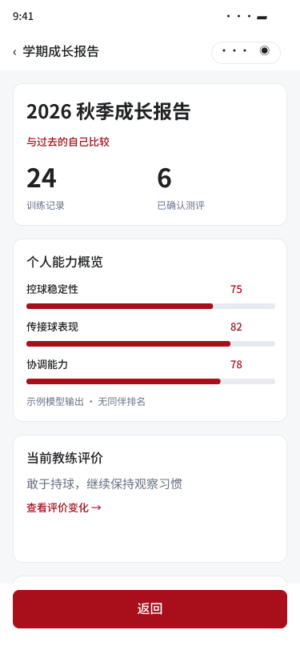
已有训练/测评数量、能力条形、当前评价；缺清楚的孩子、周期选择及周期成果依据。复用周期报告骨架，增加可比变化/里程碑。
P12 训练记录
Figma 15:46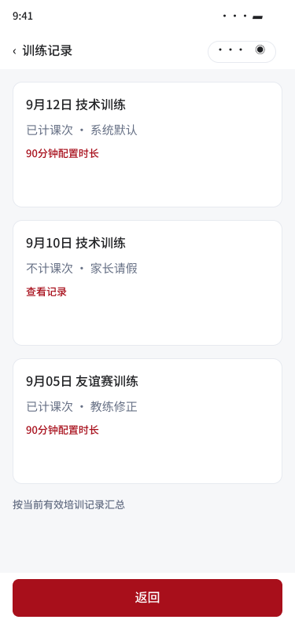
已有按课条目、计次与来源、配置时长；缺孩子、日期/指标筛选及汇总。保持“配置时长”，不改叫运动时长。
P13 比赛记录
Figma 15:50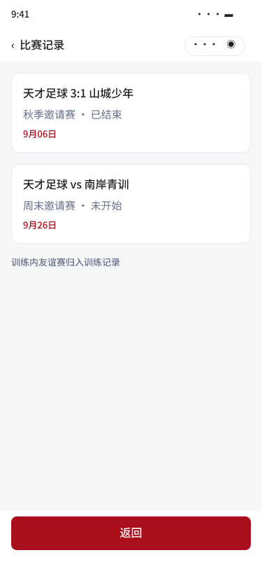
已有赛果和赛前条目，明确友谊训练归训练记录；缺孩子与地点。补上下文并链接同一赛事状态。
P14 成长里程碑
Figma 15:54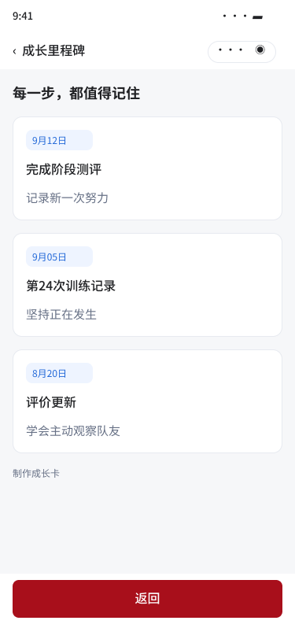
当前将完成测评、24次训练、评价更新并列为里程碑，没有规则徽章和达成依据。改为后台规则命中的成果；普通动态回测评/评价历史。
P15 成长分享卡
Figma 15:58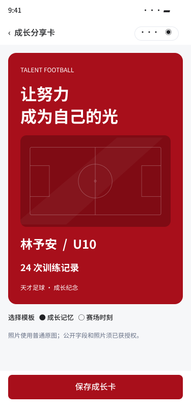
已有分享预览、两模板及授权说明；显示泛化“24次训练记录”。增加所选成果/徽章和公开字段预览，保留现有分享模板骨架。
P16 俱乐部动态
Figma 15:62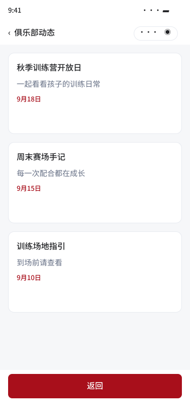
已有三条动态和发布日期；大卡片留白较多，无封面。按内容长短调整列表密度，有真实封面才显示。
P17 动态详情
Figma 15:66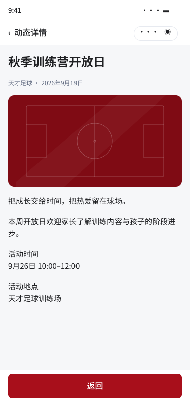
已有标题、来源日期、图片、正文和活动时间地点。保留，补有效关联活动/场地入口及撤下状态。
P18 专业服务
Figma 15:70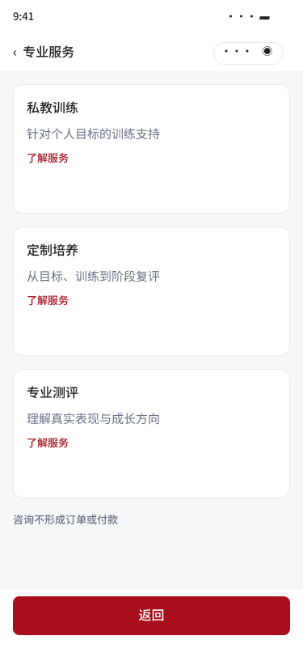
已有三类服务、简介、“了解服务”和非订单提示。补说明展开态及选定服务后咨询上下文。
P19 私教咨询
Figma 15:74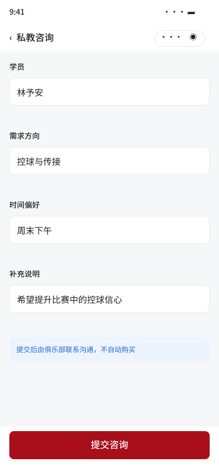
已有学员、需求方向、时间偏好和说明，明确不自动购买。保持，补选择反馈、提交中/失败与防重复。
P20 咨询已提交
Figma 15:78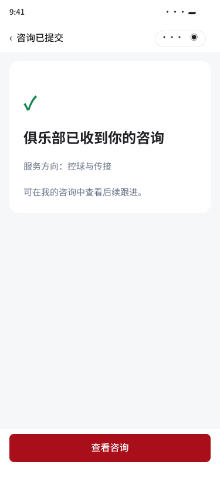
已有咨询成功、方向、查看咨询；缺孩子和刚创建咨询的明确归属。补对象摘要及直达该条咨询约定。
P21 孩子档案
Figma 15:82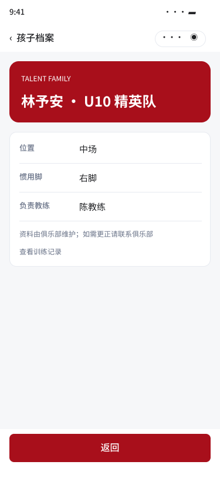
已有单孩、队伍、位置、惯用脚、教练和联系俱乐部更正说明。保留只读主档，补成长/比赛记录入口。
P22 我的
Figma 15:86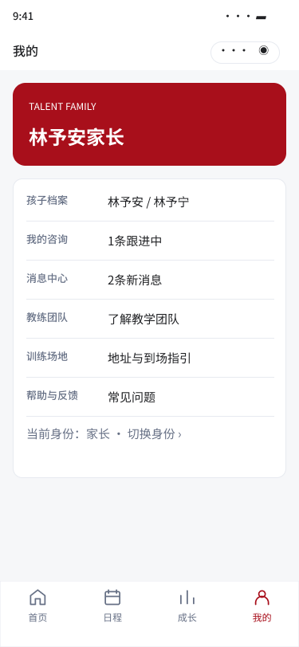
已有家长身份、两个孩子的合并档案行、咨询/消息/团队/场地/帮助；无明显快捷设置入口。拆出可选具体孩子并补P23入口、功能分组。
P23 自定义快捷入口
Figma 15:90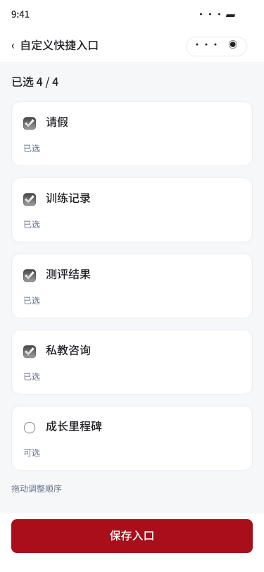
已有已选4/4、五个候选、拖动调整顺序文案及保存。保留四槽位，补可识别拖柄/序号或明确移动按钮；不是缺少排序概念。
P24 消息中心
Figma 15:94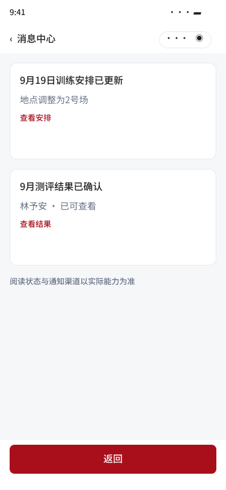
已有安排变更和成绩确认消息；第一条未标孩子。补每条对象、时间及到最新有效事实的深链。
P25 教练与场地
Figma 15:98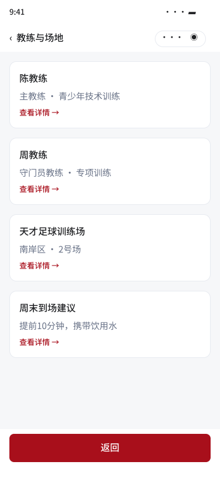
教练、场地与到场建议混列，都使用“查看详情”。聚焦教练介绍，场地复用P29；把帮助内容归帮助入口。
P26 帮助与反馈
Figma 15:102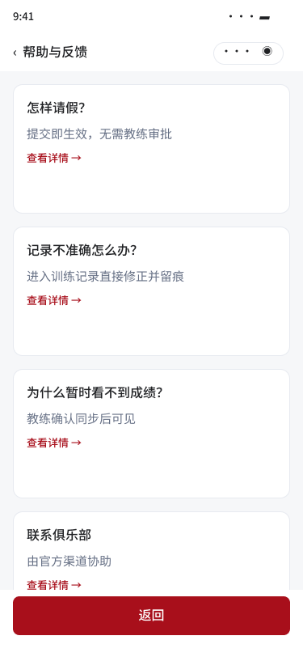
已有请假、修正、成绩可见性、官方联系四类帮助。保留，补展开/真实联系承接；末条需滚动验收，不从首屏裁剪直接认定不可达。
P27 我的咨询
Figma 25:236画板受场地页重叠遮挡；实际咨询内容见节点上下文，不把此图视为咨询页截图验收。

截图被同坐标P29遮住；设计上下文确认仍有两个孩子的咨询、日期、沟通中/已结束和非购买提示。先解决画布重叠，保留咨询列表，仅适配筛选与去向。
P28 咨询跟进
Figma 25:240画板受场地页重叠遮挡；实际咨询内容见节点上下文，不把此图视为咨询页截图验收。

截图被同坐标P30遮住；设计上下文确认仍有孩子/服务、咨询已提交、俱乐部已联系的时间线。先解决画布重叠，保留跟进结构。
P29 训练场地
Figma 112:254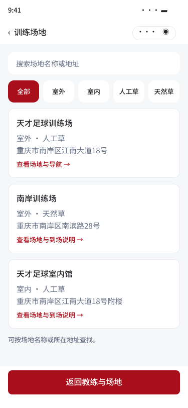
已有名称/地址搜索、全部/室外/室内/人工草/天然草、三场地和地址。保留；返回动作不应对所有来源固定“返回教练与场地”。
P30 场地详情
Figma 112:281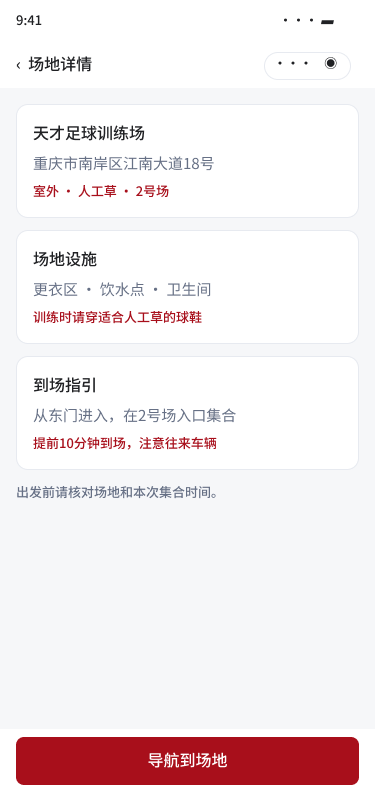
已有地址、设施、到场指引和导航；把“2号场/入口集合”区分为场馆常规指引与本次活动集合信息。返回实际来源。
P30-NO 场地暂无定位
Figma 112:308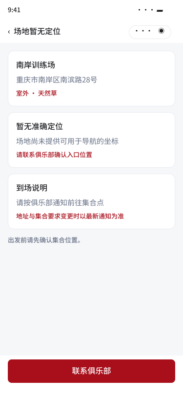
已有无准确定位说明、文字地址及联系俱乐部。保留，以坐标有效性驱动状态。
P29-A 室内场地检索
Figma 113:287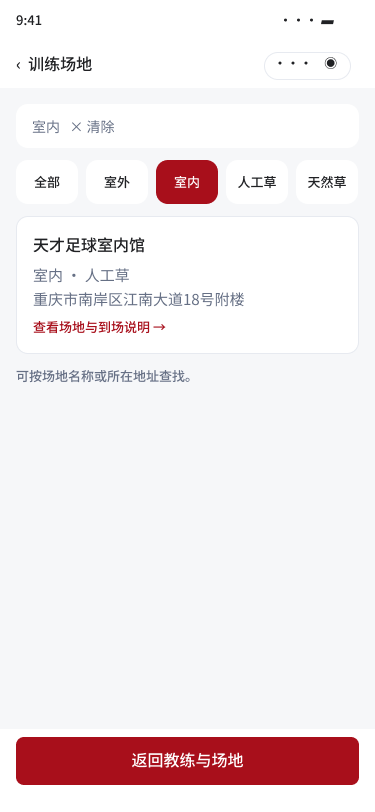
已有室内筛选与一条匹配结果。保留，明确清除搜索与筛选的范围。
P30-IN 室内馆详情
Figma 114:288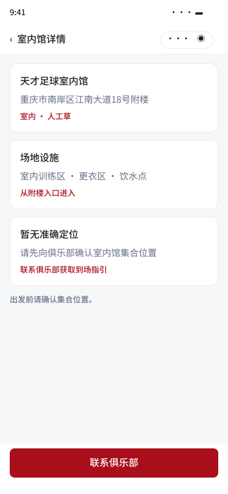
已有室内馆信息和无坐标提示。保留，但不把室内类型硬编码为无坐标。
P30-MAP 地图导航
Figma 114:315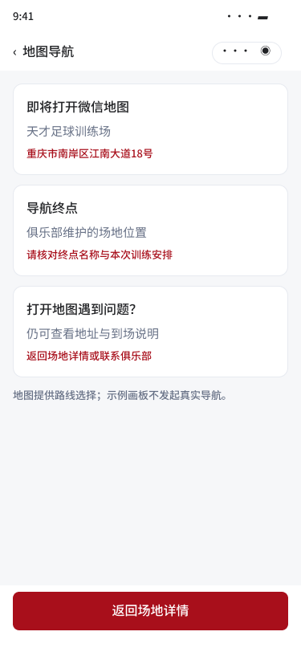
已有地图交接示意及失败帮助，明确不发起真实导航。作为示意状态保留，不当作产品必经页或导航已验收。
P29-E 未找到匹配场地
Figma 114:342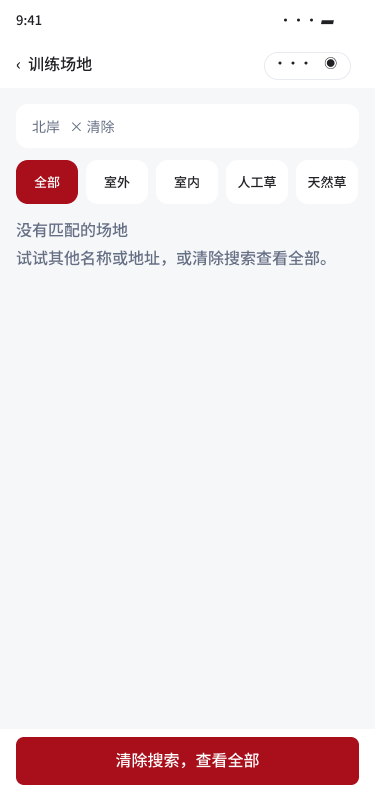
已有北岸关键词、无匹配提示与清除搜索。保留，清除后回完整列表并保留实际入口。
P31 比赛详情
Figma 115:309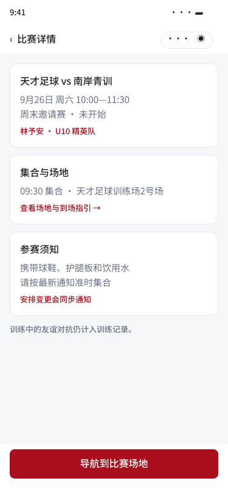
已有孩子/队伍、比赛时间、集合时间、场地和须知。保留骨架，补红色比赛类型标识和最新安排状态。
P31-END 比赛已结束
Figma 115:336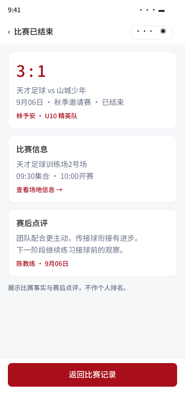
已有真实示例比分3:1、孩子、赛后点评与作者日期。保持，不补无来源的个人技术统计。
P31-CANCEL 比赛已取消
Figma 115:363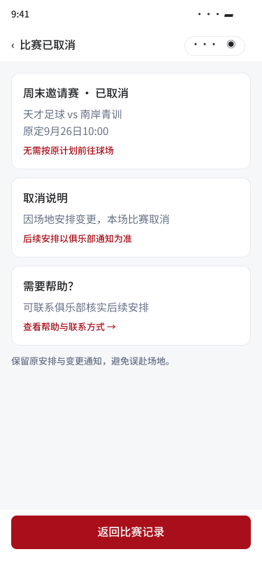
已有原时间、取消原因、“无需按原计划前往”和帮助入口。保持；配合消息/日程最新状态。
P29-OUT 室外场地
Figma 125:329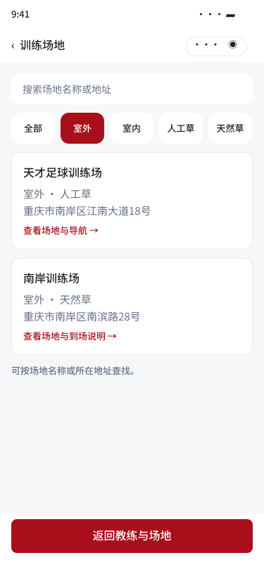
已有室外筛选，两条结果。保留，筛选语义及返回上下文一致。
P29-ART 人工草场地
Figma 125:370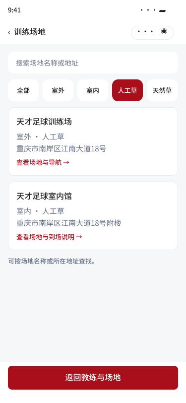
已有人工草筛选，含室内外两条结果。保留，不能把草种与室内外当同一互斥业务字段。
P29-NAT 天然草场地
Figma 125:411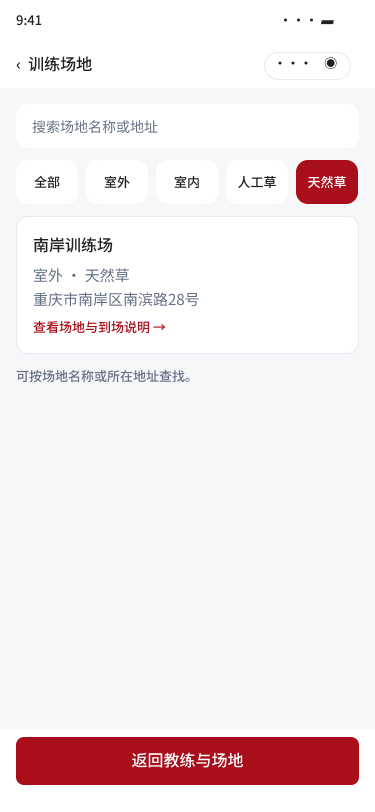
已有天然草筛选、一条结果。保留。